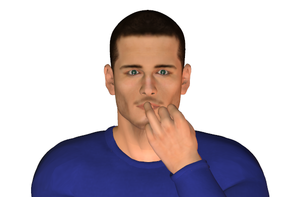

Bookmark added
-
nail bitingfrustration, suppressionIt is a habit of self comfort. It can also indicate nervousness or stress due to frustration or fear.
-
fast head nodding
 hurry up, impatienceVigorous head nodding indicates impatience. It usually indicates to the other person to wind up the conversation.
hurry up, impatienceVigorous head nodding indicates impatience. It usually indicates to the other person to wind up the conversation. -
head shaking
 disagreementShaking the head sideways indicates disapproval. But it can also signal frustration.
disagreementShaking the head sideways indicates disapproval. But it can also signal frustration. -
hand supporting chin or side of face
 evaluation, tiredness or boredomPeople displaying this signal are usually in a state of boredom or are assessing the situation.
evaluation, tiredness or boredomPeople displaying this signal are usually in a state of boredom or are assessing the situation. -
running hands through hair
 flirting, or vexation, exasperationThis sign is commonly associated with flirting. But can also be done when a person is exasperated or frustrated.
flirting, or vexation, exasperationThis sign is commonly associated with flirting. But can also be done when a person is exasperated or frustrated. -
eye shrugfrustrationUpward rolling of the eyes indicates frustration.
-
head down (in response to a speaker or proposition)negative, disinterestedThe head down is an indication of rejection. It also indicates feeling ashamed due to failure.
-
head down (while performing an activity)
 defeat, tirednessLowering the head indicates loss, defeat or being ashamed. It also tends to cause the shoulders to droop at that moment.
defeat, tirednessLowering the head indicates loss, defeat or being ashamed. It also tends to cause the shoulders to droop at that moment. -
rubbing eye or eyes
 disbelief, upset, or tirednessRubbing the eyes can indicate disbelief or getting upset. It can also indicate crying or tiredness which can be due to boredom.
disbelief, upset, or tirednessRubbing the eyes can indicate disbelief or getting upset. It can also indicate crying or tiredness which can be due to boredom. -
bottom lip jutting out
 upsetA similar version of a crying face that adults use by pushing the bottom lip forward. They make this face to get sympathy or kind treatment.
upsetA similar version of a crying face that adults use by pushing the bottom lip forward. They make this face to get sympathy or kind treatment. -
blinking infrequently
 variousIt is not the most revealing sign of understanding body language.It can be due to boredom if the eyes are unfocussed or can also be concentration if eyes are focussed. It can also indicate negativity.
variousIt is not the most revealing sign of understanding body language.It can be due to boredom if the eyes are unfocussed or can also be concentration if eyes are focussed. It can also indicate negativity. -
pursing lipsupsetAn indication that one is holding himself back from expressing what he wants to say. It can make the person anxious, impatient or upset.